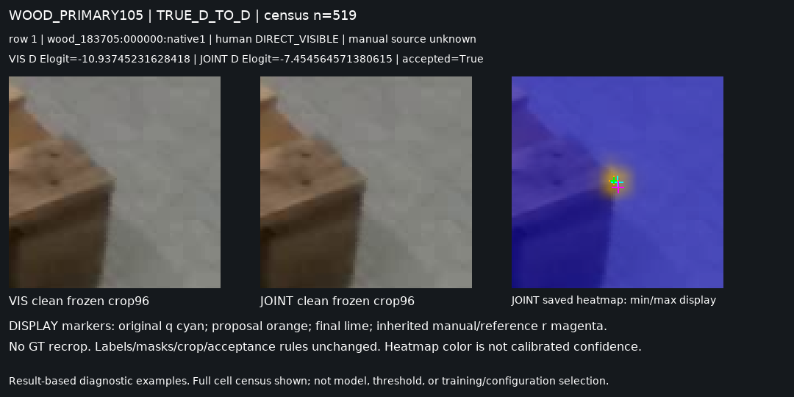
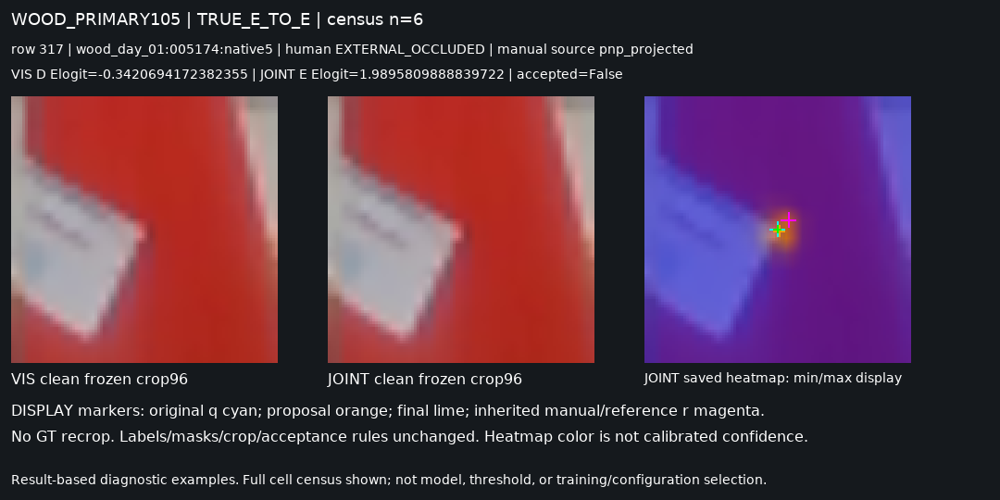
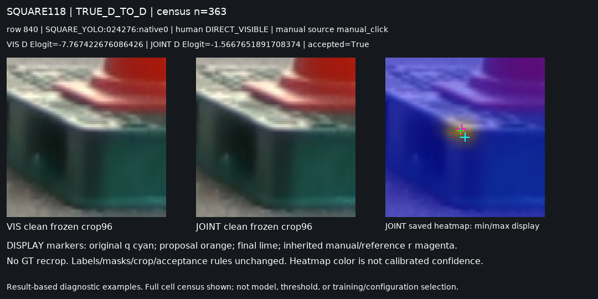

고정 규칙에 따른 12개 진단 셀
현재 평가셋은 이미 노출되어 반복 사용되었습니다. 결과 기반 진단 사례이며 각 셀 전체 건수와 최소 원본 인덱스를 표시합니다. 빈 셀은 대체하지 않았습니다. 모델·문턱·학습 설정 선택에 사용하지 않습니다. r는 기존 평가 좌표이며 새로운 실물 native 정답을 만들지 않습니다.
WOOD_PRIMARY105 / TRUE_D_TO_D: n=519

WOOD_PRIMARY105 / MANUAL_D_LE3_TO_E: n=28

WOOD_PRIMARY105 / TRUE_E_TO_E: n=6

WOOD_PRIMARY105 / TRUE_E_TO_D: n=23

WOOD_PRIMARY105 / MANUAL_D_LOC_RECOVERY: n=26

WOOD_PRIMARY105 / MANUAL_D_LOC_DAMAGE: n=39

SQUARE118 / TRUE_D_TO_D: n=363

SQUARE118 / MANUAL_D_LE3_TO_E: n=74

SQUARE118 / TRUE_E_TO_E: n=29

SQUARE118 / TRUE_E_TO_D: n=32

SQUARE118 / MANUAL_D_LOC_RECOVERY: n=114

SQUARE118 / MANUAL_D_LOC_DAMAGE: n=20